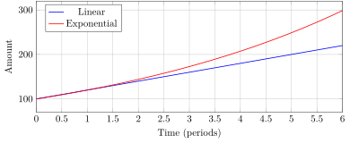
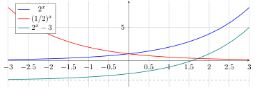
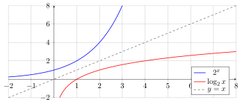
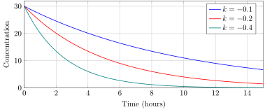
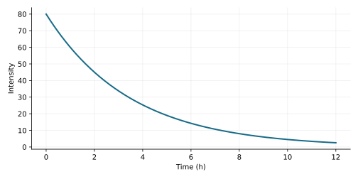

Exponential and Logarithmic Functions
Opening context: change that depends on the current amount
A medicine may be eliminated from the bloodstream at a rate proportional to how much remains. A bacterial culture may increase by a nearly constant percentage over equal time intervals. Neither process is well described by a line over a long interval. Exponential models capture repeated multiplication; logarithms answer the inverse question: how long until a target is reached? We will connect formulas, tables, graphs, units, and computational experiments.
Learning outcomes
By the end of this chapter you should be able to distinguish additive from multiplicative change; evaluate and graph exponential functions; identify growth and decay factors; solve exponential equations; interpret the natural exponential function; define logarithms as inverses; apply logarithm laws with appropriate domain restrictions; solve logarithmic equations and reject extraneous answers; build and critique growth, decay, and saturation models; interpret doubling times and half-lives; and use R and Python to verify predictions.
Prerequisite check
Review exponent rules, function composition, inverses, domains, and the meaning of a percent. For example, a 12% increase multiplies a quantity by \(1.12\), whereas a 12% decrease multiplies it by \(0.88\). The inverse of \(f(x)=3x+2\) is \(f^{-1}(x)=(x-2)/3\). Explain why \(\sqrt{x}\) is real only for \(x\ge0\).
Chapter roadmap
We begin with repeated percentage change, develop exponential functions and their inverses, learn to solve equations analytically, and end with models in which assumptions and units matter. Each computational laboratory presents the complete R code first and the corresponding Python code second.
Repeated multiplication versus repeated addition
A linear sequence adds the same amount at every step; an exponential sequence multiplies by the same positive factor. If a quantity starts at \(A_0\) and grows by a fraction \(r\) each period, then \(A_n=A_0(1+r)^n\). A decrease of fraction \(d\) uses \(A_n=A_0(1-d)^n\). The percentage applies to the current amount, not the original amount. A negative base is not suitable for a continuous real-input exponential model.
Example 1: Repeated multiplication versus repeated addition. A culture begins with 200 cells and grows 25% per hour. Find the predicted population after three hours.
Worked solution. \(A(3)=200(1.25)^3=390.625\). The fractional prediction is a model expectation, not a literal count of partial cells.
Guided practice 1.
An initial measurement is 800 units and decreases by 15% each day. Write a model and compute the value after four days.
Think, sketch, verify.
Before using software, predict the direction of change, important intercepts or asymptotes, and whether the result is physically meaningful. Then use a table or graph to test your prediction.
Exponential functions and their domains
For \(a>0\), \(a\ne1\), the function \(f(x)=a^x\) is defined for every real \(x\), takes only positive values, and passes through \((0,1)\). When \(a>1\), it is increasing; when \(0<a<1\), it is decreasing. Its horizontal asymptote is \(y=0\). Negative exponents mean reciprocals: \(a^{-x}=1/a^x\). The restriction \(a>0\) allows a consistent real-valued definition for irrational exponents.
Example 2: Exponential functions and their domains. Compare \(2^x\) and \((1/2)^x\) at \(x=-2,0,2\).
Worked solution. For \(2^x\) the values are \(1/4,1,4\); for \((1/2)^x\) they are \(4,1,1/4\). Both are positive, and both pass through \((0,1)\).
Guided practice 2.
Explain the difference between \(3^{-2}\) and \((-3)^2\). State why \((-3)^x\) is not a real-valued exponential function for every real \(x\).
Think, sketch, verify.
Before using software, predict the direction of change, important intercepts or asymptotes, and whether the result is physically meaningful. Then use a table or graph to test your prediction.
Transformations of exponential graphs
The graph \(g(x)=A a^{x-h}+k\) is a shifted and scaled exponential graph. \(h\) shifts horizontally, \(k\) shifts vertically, and \(A\) scales or reflects the vertical displacement. The horizontal asymptote is \(y=k\). If \(A>0\), the range is \((k,\infty)\); if \(A<0\), the range is \((-\infty,k)\). A horizontal translation inside the exponent must be read with care.
Example 3: Transformations of exponential graphs. Identify the asymptote and range of \(g(x)=3\cdot2^{x-1}-4\).
Worked solution. The graph of \(2^x\) moves right one unit, stretches vertically by 3, and moves down four units. Its asymptote is \(y=-4\) and its range is \((-4,\infty)\).
Guided practice 3.
Sketch \(-2(1/3)^{x+1}+5\), labeling its horizontal asymptote and one convenient point.
Think, sketch, verify.
Before using software, predict the direction of change, important intercepts or asymptotes, and whether the result is physically meaningful. Then use a table or graph to test your prediction.
The natural exponential function
The constant \(e\approx2.71828\) arises naturally from continuous compounding and many continuous-change processes. The function \(e^x\) has the same positive-domain and increasing properties as other growth exponentials. We write \(A(t)=A_0e^{kt}\), where \(k\) is the continuous growth rate per unit time. Positive \(k\) indicates growth; negative \(k\) indicates decay. The units of \(k\) are reciprocal time units.
Example 4: The natural exponential function. A substance has initial mass 50 mg and follows \(M(t)=50e^{-0.2t}\), where \(t\) is in hours. Find the predicted mass after 5 hours.
Worked solution. \(M(5)=50e^{-1}\approx18.39\) mg. The negative exponent reflects decay, and the result retains mass units.
Guided practice 4.
For \(N(t)=120e^{0.08t}\), evaluate \(N(10)\) and explain the units of \(0.08\) when \(t\) is measured in days.
Think, sketch, verify.
Before using software, predict the direction of change, important intercepts or asymptotes, and whether the result is physically meaningful. Then use a table or graph to test your prediction.
Compound interest and compounding frequency
If principal \(P\) earns nominal annual rate \(r\) compounded \(n\) times per year, then \(A(t)=P(1+r/n)^{nt}\). Continuous compounding yields \(A(t)=Pe^{rt}\). The nominal annual rate is not necessarily the effective annual percentage yield: the latter is \((1+r/n)^n-1\). Financial models illustrate exponentials, although real investments may involve fees, taxes, and variable returns.
Example 5: Compound interest and compounding frequency. Compare one year of 6% nominal interest on \(\$1{,}000\) compounded monthly with continuous compounding.
Worked solution. Monthly: \(1000(1+0.06/12)^{12}\approx1061.68\). Continuous: \(1000e^{0.06}\approx1061.84\). The difference is small but nonzero.
Guided practice 5.
Calculate the effective annual rate for a nominal 8% compounded quarterly.
Think, sketch, verify.
Before using software, predict the direction of change, important intercepts or asymptotes, and whether the result is physically meaningful. Then use a table or graph to test your prediction.
Logarithms as inverse functions
For \(a>0\) and \(a\ne1\), \(\log_a(x)=y\) means exactly \(a^y=x\). The logarithm is defined only for \(x>0\) and can return any real value. The graph of \(\log_a x\) is the reflection of \(a^x\) across \(y=x\); its vertical asymptote is \(x=0\). The inverse identities are \(a^{\log_a x}=x\) for \(x>0\) and \(\log_a(a^x)=x\) for all real \(x\).
Example 6: Logarithms as inverse functions. Evaluate \(\log_2(32)\) and \(\log_3(1/9)\).
Worked solution. Since \(2^5=32\), \(\log_2(32)=5\). Since \(3^{-2}=1/9\), \(\log_3(1/9)=-2\).
Guided practice 6.
Rewrite \(\log_5(125)=3\) exponentially and evaluate \(\log_{10}(0.001)\).
Think, sketch, verify.
Before using software, predict the direction of change, important intercepts or asymptotes, and whether the result is physically meaningful. Then use a table or graph to test your prediction.
Common logarithms, natural logarithms, and change of base
The common logarithm is \(\log x=\log_{10}x\) and the natural logarithm is \(\ln x=\log_e x\). Calculators and software usually provide both. For any valid bases, \(\log_a x=\ln x/\ln a\). This is the change-of-base formula. Logarithmic axes can reveal multiplicative patterns, but a straight line on a semilog plot does not prove the model is scientifically appropriate.
Example 7: Common logarithms, natural logarithms, and change of base. Approximate \(\log_2(7)\) using natural logarithms.
Worked solution. \(\log_2(7)=\ln7/\ln2\approx2.8074\). Because \(2^2<7<2^3\), the result should lie between 2 and 3.
Guided practice 7.
Approximate \(\log_3(20)\) to three decimals and bound the answer between consecutive integers.
Think, sketch, verify.
Before using software, predict the direction of change, important intercepts or asymptotes, and whether the result is physically meaningful. Then use a table or graph to test your prediction.
Logarithm laws and their limitations
For positive \(u,v\) and valid base \(a\), \(\log_a(uv)=\log_a u+\log_a v\), \(\log_a(u/v)=\log_a u-\log_a v\), and \(\log_a(u^r)=r\log_a u\) when the expressions are defined. There is no rule \(\log(u+v)=\log u+\log v\). When expanding logarithms of algebraic expressions, retain the original domain: for instance, \(\ln(x^2)\) is defined for \(x\ne0\), and equals \(2\ln|x|\), not \(2\ln x\) for all nonzero real \(x\).
Example 8: Logarithm laws and their limitations. Expand \(\ln(5x^2/y)\) for \(x\ne0\) and \(y>0\).
Worked solution. \(\ln(5x^2/y)=\ln5+2\ln|x|-\ln y\). The absolute value is essential for negative \(x\).
Guided practice 8.
Condense \(2\ln x-\ln(x+1)\) into one logarithm and state the domain.
Think, sketch, verify.
Before using software, predict the direction of change, important intercepts or asymptotes, and whether the result is physically meaningful. Then use a table or graph to test your prediction.
Solving exponential equations
When both sides can be expressed using the same positive base, equate exponents. Otherwise isolate the exponential term and take a logarithm. Keep units in the interpretation, and verify numerically. For \(A_0e^{kt}=T\), the time is \(t=\ln(T/A_0)/k\), provided \(A_0,T>0\) and \(k\ne0\). The sign of the resulting time should make sense in context.
Example 9: Solving exponential equations. Solve \(3e^{0.4t}=12\).
Worked solution. Divide by 3 to obtain \(e^{0.4t}=4\). Take natural logs: \(0.4t=\ln4\), so \(t=\ln4/0.4\approx3.466\).
Guided practice 9.
Solve \(250(0.8)^t=100\) using logarithms, and check your answer by substitution.
Think, sketch, verify.
Before using software, predict the direction of change, important intercepts or asymptotes, and whether the result is physically meaningful. Then use a table or graph to test your prediction.
Solving logarithmic equations
Every logarithmic argument must be positive. Solve by combining logarithms when appropriate, converting to exponential form, and checking candidates in the original equation. Algebraic manipulation may produce extraneous roots. For example, \(\ln(x-1)+\ln(x+1)\) requires \(x>1\), even though the product \(x^2-1\) is positive also when \(x<-1\).
Example 10: Solving logarithmic equations. Solve \(\ln(x-1)+\ln(x+1)=\ln8\).
Worked solution. The original domain requires \(x>1\). Combining gives \(\ln(x^2-1)=\ln8\), so \(x^2=9\). Candidates are \(\pm3\), but only \(x=3\) satisfies the domain and original equation.
Guided practice 10.
Solve \(\log_2(x-2)=3\) and state the domain before solving.
Think, sketch, verify.
Before using software, predict the direction of change, important intercepts or asymptotes, and whether the result is physically meaningful. Then use a table or graph to test your prediction.
Doubling time and half-life
For \(A(t)=A_0e^{kt}\) with \(k>0\), the doubling time is \(T_d=\ln2/k\). For \(k<0\), the half-life is \(T_{1/2}=\ln2/|k|\). These times do not depend on the starting amount when the constant-rate exponential model applies. A half-life does not imply the amount becomes exactly zero after finitely many half-lives.
Example 11: Doubling time and half-life. A medication concentration follows \(C(t)=24e^{-0.1733t}\) mg/L. Estimate the half-life.
Worked solution. \(T_{1/2}=\ln2/0.1733\approx4.00\) hours. After about four hours the predicted concentration is 12 mg/L, assuming the model applies.
Guided practice 11.
A culture grows as \(N(t)=500e^{0.12t}\) with \(t\) in hours. Compute its doubling time.
Think, sketch, verify.
Before using software, predict the direction of change, important intercepts or asymptotes, and whether the result is physically meaningful. Then use a table or graph to test your prediction.
Fitting an exponential model from two observations
Suppose \(A(t)=A_0e^{kt}\) and measurements \(A(t_1),A(t_2)\) are positive. Taking a ratio gives \(A(t_2)/A(t_1)=e^{k(t_2-t_1)}\), so \(k=\ln[A(t_2)/A(t_1)]/(t_2-t_1)\). Then \(A_0=A(t_1)e^{-kt_1}\). Two observations determine a curve under the exponential assumption; they do not establish that the process is truly exponential.
Example 12: Fitting an exponential model from two observations. A measured concentration is 40 mg/L at 0 hours and 10 mg/L at 6 hours. Find an exponential model.
Worked solution. \(k=\ln(10/40)/6=\ln(1/4)/6\approx-0.2310\) per hour. Thus \(C(t)=40e^{-0.2310t}\) mg/L, with half-life about 3 hours.
Guided practice 12.
A population rises from 300 to 450 in five days. Estimate \(k\) and write a continuous-growth model.
Think, sketch, verify.
Before using software, predict the direction of change, important intercepts or asymptotes, and whether the result is physically meaningful. Then use a table or graph to test your prediction.
Logarithmic scales and scientific measurements
Logarithmic scales compress wide ranges by recording powers or ratios. The pH scale is \(\mathrm{pH}=-\log_{10}([H^+]/(1\ \mathrm{mol/L}))\), treating the concentration ratio as dimensionless in an introductory approximation. A one-unit pH decrease corresponds to ten times the hydrogen-ion concentration. In chemistry, activity rather than raw concentration is required for precise pH, so the simple formula is an instructional model.
Example 13: Logarithmic scales and scientific measurements. Compare hydrogen-ion concentrations at pH 5 and pH 7 under the introductory concentration approximation.
Worked solution. At pH 5, \([H^+]\approx10^{-5}\) mol/L; at pH 7, \([H^+]\approx10^{-7}\) mol/L. The first is 100 times the second.
Guided practice 13.
Under the same approximation, determine the pH of a solution with \([H^+]=2\times10^{-4}\) mol/L.
Think, sketch, verify.
Before using software, predict the direction of change, important intercepts or asymptotes, and whether the result is physically meaningful. Then use a table or graph to test your prediction.
Model interpretation, assumptions, and limitations
Exponential growth cannot continue indefinitely in most biological settings because resources, competition, treatment changes, and other constraints intervene. An exponential decline may fail when a drug follows multiple compartments or nonlinear clearance. Check residual patterns, measurement uncertainty, time units, and whether predictions extrapolate beyond the observed interval. A model is a conditional description, not a guarantee.
Example 14: Model interpretation, assumptions, and limitations. A model predicts that a culture doubles every two hours from 100 cells. What does it predict after 24 hours, and why should we be cautious?
Worked solution. The prediction is \(100\cdot2^{12}=409{,}600\) cells. It assumes an unchanged doubling time over 12 cycles; limited nutrients and space may invalidate this assumption.
Guided practice 14.
Explain why a drug-decay model fitted over 0–8 hours may not reliably predict concentrations after 10 days.
Think, sketch, verify.
Before using software, predict the direction of change, important intercepts or asymptotes, and whether the result is physically meaningful. Then use a table or graph to test your prediction.
Visual investigation I: linear versus exponential change
Consider \(L(t)=100+20t\) and \(E(t)=100(1.2)^t\). Both start at 100, but the first adds 20 each step and the second adds 20% of its current amount. Complete the table, sketch both curves, and explain why the two models agree at \(t=0\) and \(t=1\) but diverge thereafter.
| \(t\) | 0 | 1 | 2 | 3 | 4 | 5 |
|---|---|---|---|---|---|---|
| \(L(t)\) | 100 | 120 | 140 | 160 | 180 | 200 |
| \(E(t)\) | 100 | 120 | 144 | 172.8 | 207.36 | 248.832 |

Investigation prompts.
Which model has constant first differences? Which has constant successive ratios? At what time does the exponential prediction first exceed the linear prediction by at least 20 units? Estimate from the graph, then verify numerically.
Visual investigation II: growth, decay, and horizontal asymptotes
The graphs of \(2^x\), \((1/2)^x\), and \(2^x-3\) show how the base and vertical shift affect monotonicity, range, and asymptotes. Record the \(y\)-intercept and range of each curve. Describe what happens as \(x\to-\infty\) and \(x\to+\infty\).

Visual investigation III: inverse graphs
Plot \(y=2^x\), \(y=\log_2 x\), and \(y=x\). The first two are reflections across the diagonal. Make a table of matching points: \((0,1)\) on the exponential becomes \((1,0)\) on the logarithm; \((3,8)\) becomes \((8,3)\). Why does the logarithm have a vertical rather than horizontal asymptote?

Visual investigation IV: interpreting a semilog plot
Suppose \(C(t)=50e^{-0.25t}\). Taking natural logs gives \(\ln C(t)=\ln50-0.25t\). Therefore a plot of \(\ln C\) against \(t\) is a line with slope \(-0.25\). Calculate concentrations at \(t=0,2,4,6,8\); graph both \(C(t)\) and \(\ln C(t)\); then explain how the slope of the transformed plot relates to the original model. Do not take a logarithm of a nonpositive measurement.
Extended workshop A: medication elimination
A hypothetical medication has concentration \(C(t)=32e^{-0.18t}\) mg/L, with time in
hours. (a) Find \(C(0)\) and \(C(6)\). (b) Determine the half-life. (c)
Find when the model first predicts \(C(t)=5\) mg/L. (d) Interpret the units and
discuss why a single exponential may not describe all patients.
Worked solution. \(C(0)=32\) mg/L; \(C(6)=32e^{-1.08}\approx10.87\) mg/L. The
half-life is \(\ln2/0.18\approx3.85\)
hours. Solving \(32e^{-0.18t}=5\) gives
\(t=\ln(32/5)/0.18\approx10.31\) hours.
This is a mathematical prediction, not medical dosing advice.
Extended workshop B: microbial growth and model breakdown
A culture starts at 250 cells and is observed to reach 400 cells
after three hours. Assume exponential growth for the exercise. (a)
Estimate \(k\). (b) Predict the amount
at six hours. (c) Find doubling time. (d) Explain why extrapolation to a
month is unreasonable.
Worked solution. \(k=\ln(400/250)/3\approx0.1567\) per hour.
The six-hour prediction is \(250e^{6k}=250(1.6)^2=640\) cells. Doubling
time is \(\ln2/k\approx4.42\) hours.
Nutrient limits and changing growth phases can invalidate the long-term
model.
Extended workshop C: logarithmic interpretation
Under the introductory concentration-based pH approximation, compare
solutions with \([H^+]=10^{-3}\) mol/L
and \([H^+]=10^{-5}\) mol/L. Compute
pH, concentration ratio, and the effect of a tenfold dilution of the
first solution (assuming the simple concentration model remains
applicable).
Worked solution. Their pH values are 3 and 5; the first
has 100 times the hydrogen-ion concentration of the second. A tenfold
dilution changes \(10^{-3}\) to \(10^{-4}\) mol/L, corresponding to pH 4
under the stated approximation.
Computational laboratory A: exponential growth and decay
Purpose. Compare linear and exponential trajectories, generate a graph, and interpret the difference between fixed increments and fixed percentages. Run the R listing first, then the Python listing. Both scripts are standalone and require no input files.
R code
# LAB A: Linear and exponential change
period <- 0:10
linear <- 100 + 20 * period
exponential <- 100 * 1.2^period
results <- data.frame(period, linear, exponential)
print(results)
plot(period, exponential, type = "b", col = "blue", pch = 19,
xlab = "Period", ylab = "Amount", main = "Change models")
lines(period, linear, type = "b", col = "red", pch = 17)
legend("topleft", legend = c("Exponential", "Linear"),
col = c("blue", "red"), lty = 1, pch = c(19, 17))
cat("At t=5:", exponential[6], "versus", linear[6], "\n")
# End laboratory A
# LAB B: Half-life and inverse calculationPython code
# LAB A: Linear and exponential change
import math
import matplotlib.pyplot as plt
period = list(range(11))
linear = [100 + 20 * t for t in period]
exponential = [100 * 1.2**t for t in period]
for t, l, e in zip(period, linear, exponential):
print(f"t={t:2d}: linear={l:.2f}, exponential={e:.2f}")
plt.figure()
plt.plot(period, exponential, "o-", label="Exponential")
plt.plot(period, linear, "s-", label="Linear")
plt.xlabel("Period")
plt.ylabel("Amount")
plt.title("Change models")
plt.legend()
plt.savefig("chapter07_models.png", dpi=180)
plt.close()Interpretation.
Which model is larger at \(t=5\)? What changes if the growth rate is reduced from 20% to 5%?
Computational laboratory B: half-life and inverse calculations
Purpose. Use logarithms to determine the time required to cross a target concentration, and check by substituting into the original model.
R code
k <- 0.18
target <- 5
half_life <- log(2) / k
time_to_target <- log(C0 / target) / k
check <- C0 * exp(-k * time_to_target)
print(c(half_life = half_life, time_to_target = time_to_target,
checked_concentration = check))
# End laboratory B
# LAB C: Log-linear fitting and residual inspectionPython code
# LAB B: Half-life and inverse calculation
C0 = 32
k = 0.18
target = 5
half_life = math.log(2) / k
time_to_target = math.log(C0 / target) / k
check = C0 * math.exp(-k * time_to_target)
print("Half-life:", round(half_life, 4))
print("Time to target:", round(time_to_target, 4))Interpretation.
Explain why the logarithm of the ratio \(C_0/C_{\rm target}\) is dimensionless.
Computational laboratory C: fitting a model and checking residuals
Purpose. Estimate an exponential model from observations, visualize measured versus predicted values, and inspect residuals. This is an exploratory fit, not a claim of causal mechanism.
R code
measured <- c(40, 26, 17, 10.8, 7.4)
fit <- lm(log(measured) ~ time)
intercept <- coef(fit)[1]
rate <- coef(fit)[2]
predicted <- exp(predict(fit))
residual <- measured - predicted
print(data.frame(time, measured, predicted, residual))
cat("Estimated A0:", exp(intercept), "rate:", rate, "\n")
plot(time, measured, pch = 19, xlab = "Time (hours)",
ylab = "Concentration (mg/L)", main = "Exponential fit")
lines(time, predicted, col = "blue", lwd = 2)
plot(time, residual, pch = 19, xlab = "Time (hours)",
ylab = "Observed - predicted", main = "Residuals")
abline(h = 0, lty = 2)
# End laboratory CPython code
# End laboratory B
# LAB C: Log-linear fitting and residual inspection
import numpy as np
time = np.array([0, 2, 4, 6, 8], dtype=float)
measured = np.array([40, 26, 17, 10.8, 7.4], dtype=float)
rate, intercept = np.polyfit(time, np.log(measured), 1)
predicted = np.exp(intercept + rate * time)
residual = measured - predicted
for t, observed, fitted, error in zip(time, measured, predicted, residual):
print(f"{t:.0f}: observed={observed:.2f}, predicted={fitted:.2f}, residual={error:.2f}")
print("Estimated A0:", round(math.exp(intercept), 4), "rate:", round(rate, 4))
plt.figure()
plt.plot(time, measured, "o", label="Observed")
plt.plot(time, predicted, "-", label="Fitted")
plt.xlabel("Time (hours)")
plt.ylabel("Concentration (mg/L)")
plt.legend()Interpretation.
A fitted straight line in log-space corresponds to multiplicative errors on the original scale. What pattern in residuals might make you question the model?
Calculus readiness: instantaneous change
For \(A(t)=A_0e^{kt}\), the average rate of change over \([t,t+h]\) is \([A(t+h)-A(t)]/h=A_0e^{kt}(e^{kh}-1)/h\). As \(h\) approaches zero, this expression approaches \(kA(t)\); calculus will establish this limit rigorously. For a decay model \(k<0\), the instantaneous rate is negative and its magnitude decreases as the amount declines. Compare average rates using \(h=1,0.1,0.01\) and predict the limiting value.
Guided problem-solving clinic: choosing the right method
Case 1: Identifying a model from a table
Consider the observations \(100,130,169,219.7\) at times \(0,1,2,3\). Subtract successive entries and compare the differences: \(30,39,50.7\) are not constant. Now divide successive entries: each ratio is \(1.3\). Thus \(A(t)=100(1.3)^t\) is an exact model for the table. Explain why the data alone do not guarantee the same rate in future periods.
Your turn.
A second sequence is \(500,425,361.25,307.0625\). Determine the common ratio and write a model. Estimate the first period at which the value falls below 200.
Case 2: An exponential equation with a baseline
Suppose a response is modeled by \(R(t)=8+40e^{-0.3t}\). Find the time when \(R(t)=18\). First subtract the baseline: \(10=40e^{-0.3t}\). Divide by 40: \(1/4=e^{-0.3t}\). Take logarithms: \(-0.3t=\ln(1/4)\). Therefore \(t=\ln4/0.3\approx4.62\). The response approaches 8 but never reaches 8 at finite time.
Your turn.
Solve \(5+25e^{-0.4t}=10\). Why would setting \(25e^{-0.4t}=10\) be incorrect?
Case 3: Checking a logarithmic solution
Solve \(\log_3(x+1)+\log_3(x-1)=2\). The original domain is \(x>1\). Combine logs: \(\log_3(x^2-1)=2\). Convert: \(x^2-1=9\), so \(x=\pm\sqrt{10}\). Only \(x=\sqrt{10}\) is in the original domain. Substituting confirms that \((x+1)(x-1)=9\).
Your turn.
Solve \(\ln(x-2)+\ln x=\ln15\) with a complete domain check.
Case 4: Model parameters from a half-life
Suppose a tracer has a half-life of 9 hours and an initial amount of 75 units. The factor after \(t\) hours is \(2^{-t/9}\), so \(A(t)=75\cdot2^{-t/9}=75e^{-(\ln2/9)t}\). Both forms describe the same model. At 18 hours, two half-lives have elapsed and the predicted amount is \(75/4=18.75\) units.
Your turn.
Write a model for an initial 120 mg with half-life 6 hours. Find the predicted amount after 15 hours and the time required to reach 10 mg.
Further visual investigation: parameter sensitivity
Compare \(C_1(t)=30e^{-0.1t}\), \(C_2(t)=30e^{-0.2t}\), and \(C_3(t)=30e^{-0.4t}\) for \(0\le t\le15\). All share an initial value of 30, but their rates and half-lives differ. Before plotting, rank their concentrations at \(t=10\) and their half-lives. After plotting, explain why a steeper early decline corresponds to a shorter half-life.

Interpretation prompts.
Explain what happens to the predicted concentration as \(t\to\infty\). Why is the model’s zero asymptote not a statement that the drug is measurable forever? How might a detection threshold affect the practical interpretation?
Chapter review exercises
A quantity grows by 7% per month from 400. Write a model and find the value after eight months.
A quantity declines by 9% per week from 900. Find the value after six weeks.
Distinguish \(200+15t\) from \(200(1.15)^t\) using successive differences and ratios.
Find the domain, range, intercept, and asymptote of \(f(x)=4^x\).
Find the domain, range, and asymptote of \(g(x)=2\cdot3^{x+1}-5\).
Explain why \((-2)^x\) is not a real-valued exponential function on all of \(\mathbb R\).
Evaluate \(\log_4 64\), \(\log_2(1/16)\), and \(\ln(e^{-3})\).
Convert \(\log_7(49)=2\) to exponential form.
Compute \(\log_5(12)\) using change of base.
Expand \(\ln(3x^2/y)\) with a mathematically correct domain statement.
Condense \(\ln x+2\ln(x+2)\) into one logarithm and give its domain.
Explain with a numerical counterexample why \(\ln(a+b)\ne\ln a+\ln b\) in general.
Solve \(2^{x+1}=32\) exactly.
Solve \(7e^{0.3t}=20\) and verify numerically.
Solve \(100(0.85)^t=35\) for \(t\).
Solve \(\ln(x-4)=2\) and check the domain.
Solve \(\ln(x-1)+\ln(x+2)=\ln10\) and reject invalid candidates.
Determine the half-life for \(C(t)=60e^{-0.14t}\).
Determine the doubling time for \(N(t)=120e^{0.06t}\).
Find the exponential model through \((0,80)\) and \((4,20)\).
A culture grows from 600 to 750 in two hours. Estimate its continuous rate.
Compute the amount after five years on \(\$2{,}000\) at 4% compounded quarterly.
Compare annual and continuous compounding at a nominal 5% rate.
Under the simplified concentration-based pH formula, find pH when \([H^+]=4\times10^{-6}\) mol/L.
Two solutions differ by 3 pH units. What is their hydrogen-ion concentration ratio under the approximation?
Interpret the slope and intercept of \(\ln C(t)=3.5-0.2t\).
Make a table and graph comparing \(500+30t\) and \(500(1.06)^t\) for \(0\le t\le10\).
Write R or Python code to compute a decay-model half-life and verify the half-value.
Fit a two-point exponential model to observations \((0,30)\) and \((6,12)\); explain a limitation.
For \(A(t)=40e^{-0.1t}\), compute average rates on \([2,3]\), \([2,2.1]\), and \([2,2.01]\); predict the instantaneous rate at \(t=2\).
Extended application: Decay of a fluorescent signal
A synthetic fluorescent signal starts at 80 units and retains 75 percent of its intensity every hour. The quantities in this investigation are illustrative rather than measured observations.
Formulating the mathematical model
The proposed relationship is \[I(t)=80(0.75)^t.\] Before calculating, identify the input and output, their units, and the interval on which the model is being studied. Distinguish the mathematical domain from the practical domain. The numerical study uses inputs from \(0\) to \(12\).
Example 15: Analytical investigation. Derive the half-life and the time at which intensity reaches 10 units. Explain why the model never reaches zero.
Worked solution. \(t_{1/2}=\ln(0.5)/\ln(0.75)\) and \(t_{10}=\ln(1/8)/\ln(0.75)\). Positive exponential factors never vanish.
Connecting numerical and graphical representations
| Time (h) | Intensity |
|---|---|
| 0 | 80 |
| 3 | 33.75 |
| 6 | 14.24 |
| 9 | 6.007 |
| 12 | 2.534 |

Interpretation. Compare the tabulated values with the graph. Identify the intervals over which the output increases or decreases, and distinguish a sampled extremum from an exact analytical extremum. Explain whether interpolation and extrapolation have the same justification in this setting.
R implementation
The following standalone script defines the model, generates predictions, and draws a labeled graph. Read the formula before running the code. The sampled range is a numerical diagnostic, not a proof of the exact range.
# Applied investigation: Decay of a fluorescent signal
# 1. Define the input domain and model
x <- seq(0, 12, length.out = 301)
y <- 80*0.75^x
# 2. Inspect numerical predictions
idx <- unique(round(seq(1, length(x), length.out = 5)))
print(data.frame(input = x[idx], output = y[idx]))
# 3. Visualize the model with labeled axes
plot(x, y, type = "l", lwd = 2, col = "#176B87",
xlab = "Time (h)", ylab = "Intensity")
grid()
# 4. Check the sampled output range
print(range(y))Python implementation
Repeat the same investigation using NumPy arrays and Matplotlib. Compare the printed predictions with the R output, allowing for rounding.
# Applied investigation: Decay of a fluorescent signal
import numpy as np
import matplotlib.pyplot as plt
# 1. Define the input domain and model
x = np.linspace(0, 12, 301)
y = 80*0.75**x
# 2. Inspect numerical predictions
idx = np.unique(np.linspace(0, len(x)-1, 5).round().astype(int))
print(np.column_stack((x[idx], y[idx])))
# 3. Visualize the model with labeled axes
fig, ax = plt.subplots(figsize=(7, 3.6))
ax.plot(x, y, "-", color="#176B87", linewidth=2)
ax.set(xlabel="Time (h)", ylabel="Intensity")
ax.grid(alpha=0.22)
ax.spines[["top", "right"]].set_visible(False)
fig.tight_layout()
plt.show()
# 4. Check the sampled output range
print(np.min(y), np.max(y))Guided practice: checking the model
Calculate the outputs at the two endpoints by hand. Compare them with the numerical table.
Select an interior input not listed in the table. Predict the output before evaluating it in either language.
Explain the meaning of the difference between the two endpoint outputs, including units. If appropriate, calculate the average rate of change.
Identify a physical assumption of the model and describe a circumstance in which it would fail.
Chapter project: investigating Decay of a fluorescent signal
Prepare a short technical report for a reader who has not studied the model. Use the preceding case as a starting point, but develop your own investigation rather than merely reproducing the worked example.
State a quantitative question that can be answered using the model. Define all variables, units, and restrictions.
Modify one meaningful numerical parameter in the formula. Explain what the change represents in the original context. Derive the revised formula and predict the direction of change before computing.
Compare the original and revised models at five common admissible inputs. Present a labeled table and explain the largest difference in the table.
Produce a graph containing both models on the same axes. Use a legend and distinguish the curves with line styles or markers. Explain the shape and any intersections.
Solve your quantitative question algebraically where possible. Verify the result using R and Python; report any differences due to numerical precision.
Discuss at least two limitations. Describe what measurements would be needed to assess the model in practice. Do not present simulated predictions as empirical evidence.
Project deliverables and assessment
Submit a two- to three-page report, the two runnable scripts, and the labeled figure. The report should stand on its own without requiring the reader to inspect the code.
| Criterion | Points |
|---|---|
| Mathematical formulation and domain | 20 |
| Analytical reasoning and verification | 25 |
| Reproducible R and Python computations | 20 |
| Graph and table quality | 15 |
| Interpretation and limitations | 20 |
| Total | 100 |
Chapter summary
Exponential models describe constant proportional change, while logarithms reverse exponentiation and solve time-to-threshold questions. Domains, positive arguments, units, and model assumptions are essential. Graphs, tables, and computation provide checks, but do not replace mathematical explanation or validation against observations.
Looking ahead
The next chapter uses radian measure and the unit circle to develop periodic phenomena. The habits practiced here—matching formulas to graphs, identifying domains, interpreting parameters, and checking assumptions—remain central throughout trigonometry and calculus.
Companion scripts
Interactive investigation: Exponential growth and decay
Enable JavaScript to explore the model.
Explore and explain: Compare doubling and halving times for opposite rates.